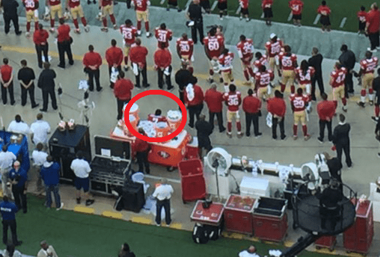
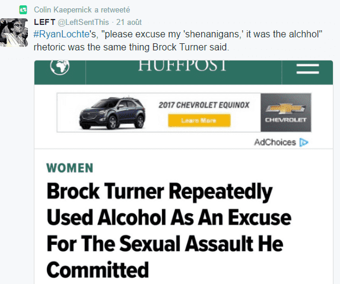
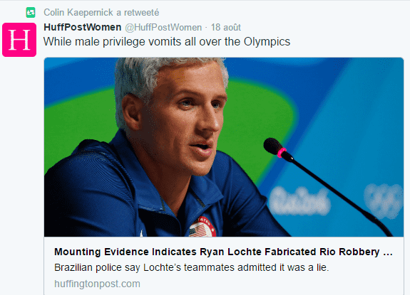
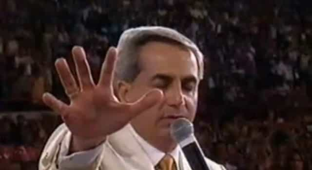
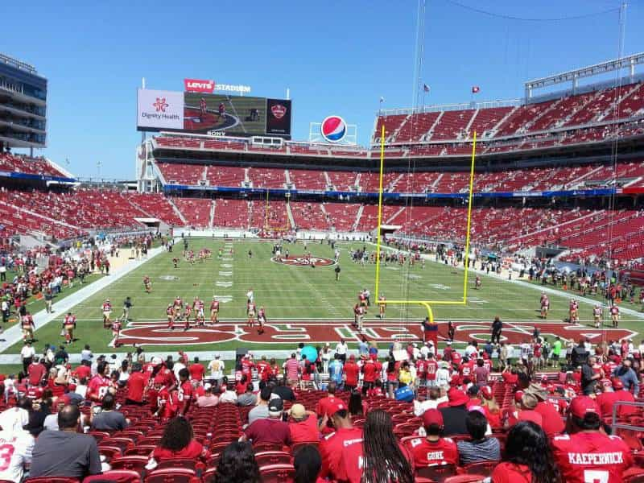
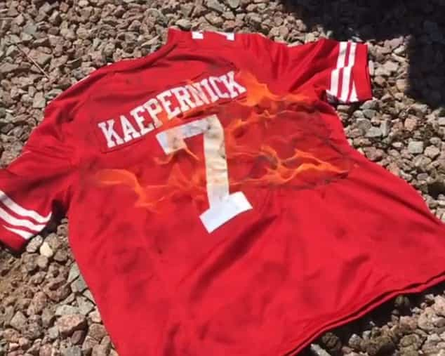
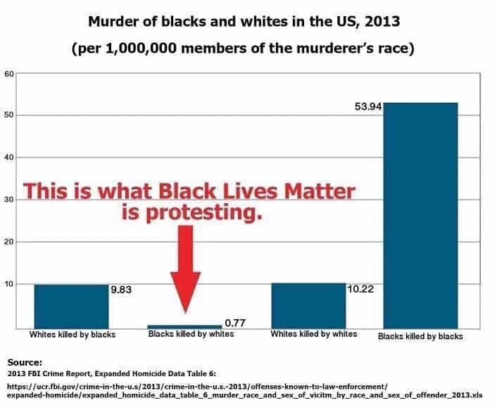

< < < Back
Quarterback Colin Kaepernick Fights White Privilege By Not Foregoing His $114 Million Paycheck – Return Of Kings
During his last NFL game against the Green Bay Packers, quaterback Colin Kaepernick created controversy by remaining seated during the national anthem. It is part of the traditions of the game to stand up while the “Star-Spangled Banner” is played.

Kaepernick during the anthem
Responding to his critics, this is what Colin had to say:
“I am not going to stand up to show pride in a flag for a country that oppresses Black people and people of color. To me, this is bigger than football and it would be selfish on my part to look the other way. There are bodies in the street and people getting paid leave and getting away with murder.”
The background
It is clear that he acted in support of the Soros-backed Black Lives Matter movement. The NFL is increasingly turning into a political arena to impose PC-approved themes. This phenomenon can not be ignored when we observe the recent events occurring during the season:
Kaepernick often jumps on the BLM “every white is a white supremacist” and rape-culture mangina train on Twitter and it has been going on for quite some time. His account only displays news of police shooting minorities, an obsession for white privilege and the celebration of slave rebellions when they kill whites.


It is being a recurrent remark among sport experts that he should focus more on training than tweeting. Being European, I will let our American readers decide of his quality as a player.
A bit of history

- Colin Kaepernick was born of a black father and white mother, Heidi Zabransky (née Russo).
- His father never aknowledged him (even after his rise to fame) and ran away. His mother put him for adoption when he was six weeks old.
- The Kapernicks, a white family from Wisconsin, adopted him. By Zabransky’s account, the Kaepernicks were “giving, wonderful people. Colin himself confirmed that he had a happy childhood with a loving family.
- Colin’s biological mother never told him or her parents anything about Colin’s father.
- His adoptive parents never treated him differently from his white siblings. They said clearly that he was adopted but that they were nevertheless his family.
- Colin was never raised by a black parent but says
My racial heritage is something I want people to be well aware of. I do want to be a representative of the African community, and I want to hold myself and dress myself in a way that reflects that
- He has a $114,000,000 contract with the 49ers and an average salary of $19,000,000.
- Kaepernick, coming from a Christian upbringing, also converted to Islam last football season and is engaged to a Black Lives Matter activist and hip hop radio host. (Sources and further information)
The motivation behind the decision
It is quite strange to see a half-white, wealthy quarterback from a white background with a good education and what many could see as the pinnacle of privilege, stand up against those who “oppress Black people and people of color.”
Well-documented data related to race and based on crime statistics, police fatal shootings, household income and many others confirm that the black community is currently in the best situation it has ever been in American history.
Blacks killed by police – 1%
Blacks killed by whites – 2%
Whites killed by police – 3 %
Whites killed by whites – 16%
Whites killed by blacks – 81%
Blacks killed by blacks – 97%
Blacks represent 13% of the population of the USA
2015 US crime statistics (crime statistics bureau)

Kaepernick behaves like a last-minute religious convert
The convert is always the most zealous as he works harder to fit in the new group he chose, in order to be accepted by the more “naturally determined” members of the group.
The example of Westerners with a Christian or neutral religious background that convert to Islam comes to mind, especially the ones that look like the polar opposites of the “naturally determined” followers of Islam.
They make up for their late start by being more aggressive or more invested in the “cause”. Through this process, they seek validation from their new peers and distance themselves from the group they originate from. They harbour the feeling that if they do not go the extra mile, they can be seen as a potential traitor instead of a safe ally.

The case of Kaepernick reminds me of neckbeard ginger jihadi Jordan Horner.
It appears clear that the quaterback’s stance on racial issues betrays a desire to seek revenge on the white mother that abandoned him, even if all the love he received afterwards came from his white family from Wisconsin.
The expression of this deeply rooted issue is hardly understandable. The hatred should be directed towards his black father instead of his mother who, at the very least, gave him to a loving, stable family instead of dragging her infant into a future single-mother hell.
The total absence of a strong father role might explain why Kaepernick chooses the role of the victim instead of being a role model for the youth (as he shortly did before) through talent, hard work or athletic excellence.
The aftermath

It is a fact that sitting during the anthem before games is not forbidden by the NFL. Kaepernick had the right to do so even if one can disagree with his motivations.
But in those times of division, symbols and tradition such as standing up for the anthem are one of the few left that allow the American population to unite.
It is an unnecessary provocation, a recuperation by a brat with daddy issues popularised by the domestic terrorist group know as Black Lives Matter. It can only be seen as a maneuver to earn some credit from the black community.

His teammates and the whole franchise of the 49ers are the one that will pay for his selfish choice. They have no power apart from voicing their disapproval over the situation but the brand will lose in popularity and suffer financial consequences. There have been multiple reports of fans burning their Kaepernick jerseys or canceling their season tickets following his decision.
The San Francisco 49ers public representatives, faithful to the liberal self-flagellating tradition of their host city, decided to support Kaepernick in his decision. But many of his teammates and 49ers staff made a point of showing their disapproval regarding Kaepernick’s choice (1,2).
It boils down to attention whoring
Are the “problem glasses” a coincidence?
Colin says it himself. He is not looking for approval. But his gesture brings nothing productive or groundbreaking. The only “positive” impact of what he did are a few retweets by black activists but nothing has changed in essence.
His public involvement in the “cause” is extremely recent. Noticing that his fame was in decline or stalling, he finds an opportunity for virtue signaling and tries to catch some light through race baiting.
Qui vit par le glaive périra par le glaive

Kaepernick impulsive stint might cost him more than a few boos. In addition to dwindling possibilities of future contracts, his popularity is in free fall now that the BLM movement has been exposed for what it is.
Contrary to “Look at me” Colin, many prominent figures of the black community try to dissociate themselves from Black Lives Matter, seeing their growing propensity to violent acts and the bad publicity that follows.
We simply witness the tantrum of a self-hating Jesse Williams clone, sticking it to his white mother on a football field. It could also be a maneuver to make the public forget about the incident where he called his opponent Lamarr Houston the N-word during an altercation on the field.
Karma is a bitch and the victim card is a double-edged sword.
Read more: Mizzou “White Privilege” Hunger Striker Jonathan Butler Is From A Family Worth $20 Million